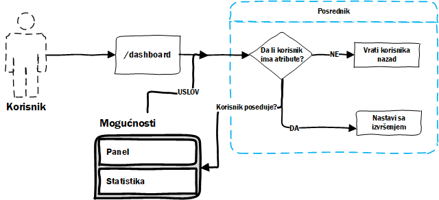

Mogućnosti
Mogućnosti su opcije koje korisnik ima u zavisnosti od pretplate. Neke od inicijalnih opcija sa kojima dolazi projekat:
- Praćenje - mogućnost da se prati statistika linka.
- Panel - pristup korisničkom panelu.
- Jedinstvene posete - praćenje jedinstvenih korisnika.
- Lokacija - praćenje sa koje lokacije je pristupljeno hešu.
- VPN detektor - praćenje da li je poseta sa VPN adrese ili ne.
- Naziv linka - mogućnost da se unese heš po želji.
Opcije je moguće dinamički dodavati, brisati i isto tako ih vezivati za određene pretplate.
Kontrola pristupa
Pošto je opcija vezana za pretplatu, mora se ograničiti da korisnik svojom pretplatom ima samo opcije svoje pretplate. Što znači ako korisnik nema opciju panel on neće moći da pristupi panelu.
Ovaj problem je rešen korišćenjem posrednika (middleware-a). Uveden je FeatureMiddleware posrednik, koji je zadužen da proveri da li korisnik ima mogućnosti koje su prenete preko rutera.

Ruter
Način na koji se ograničava pristup rutama je pomoću atributa grupe u ruteru.
Route::group(['features' => ['dashboard']], function() {
Route::get('/dashboard', 'DashboardController@index')
});
Preko atributa features prenosi se slug mogućnosti za koje se želi da se ograniči groupa ruta.
Prilikom prisupa nekoj od ruta iz grupe naš posrednik će proveriti da li korisnik ima SVE mogućnosti koje zahteva ta grupa.
Sve mogućnosti korisnika
Kako bi se vršila provera da li korisnik ima neku od mogućnosti mora se stalno imati uvid u njegove mogućnosti. Ovde nastaje problem, ako uzimamo mogućnosti kad god proveravamo da li on ima tu mogućnost dolazimo do N+11 problem.
Ovaj problem je rešen korišćenjem Eager loading2 tehnike u laravelu, gde se prilikom vraćanja korisnika vraća njegova pretplata i svi njegovi atributi.
1. Čest problem koji se javlja kada pomoću jedno upita vratimo kolekciju i onda prođemo kroz tu kolekciju gde za svaku stavku izvućemo dodatne stvari. ↩
2. https://laravel.com/docs/5.6/eloquent-relationships#eager-loading ↩